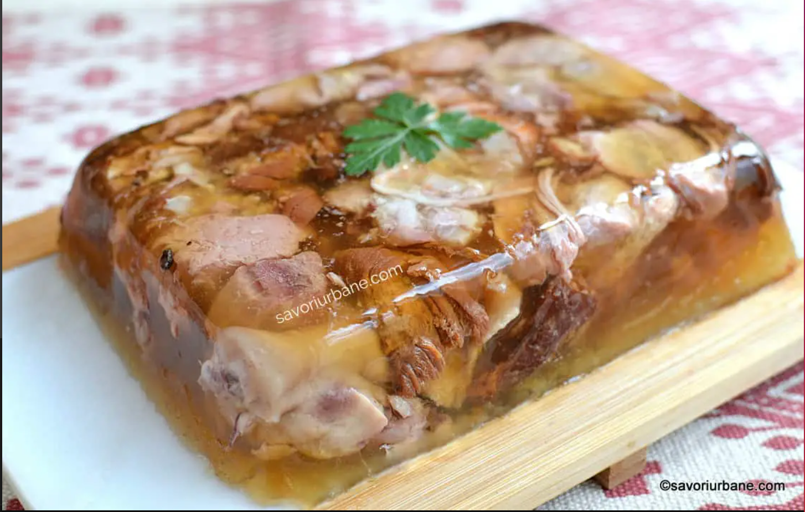

Lasagna ala Ramna

Description
Piftia este unul dintre preparatele care nu lipsesc de pe mesele romanilor, din timpul sarbatorilor de iarna.
Este un fel de mancare aspectuos, dar si foarte gustos si hranitor si, in plus, poate fi preparat cu o varietate
de tipuri de carne sau in versiune vegetariana, cu diverse arome. Piftia se consuma rece si ocupa un loc
onorabil printre alte feluri de mancare servite ca aperitive. Am pregatit pentru tine cateva retete si sfaturi,
pentru prepararea unor piftii delicioase.
Piftia de porc clasica nu contine decat carne si supa rezultata din fierberea acesteia, cu sare, piper si mult
usturoi. Fiarta suficient (macar cinci ore), nu va avea nevoie de gelatina ca sa se inchege.
Ingredients
- 1 pulpa de porc
- 2 picioare de porc
- 2 cepe medii
- 1 morcov mare
- 5 frunze de dafin
- boabe de piper
- 1 capatana usturoi (sau mai putin, dupa gust)
- sare (dupa gust)
Steps
- Carnea se curata bine, se spala si se taie in bucati de dimensiuni medii, apoi se lasa in apa rece, timp de
cateva ore, schimband lichidul de cateva ori.
- Oala in care ai pus carne si apa cat sa o acopere bine, depasind 3-4 degete, se pune apoi la foc mic, pe
aragaz.
- Se adauga in oala morcovul, ceapa, foile de dafin si piperul boabe. Pentru ca supa sa aiba o culoare aurie,
poti pune ceapa cu tot cu coaja.
- In timpul gatitului, este necesar sa indepartezi periodic spuma formata.
- Fierbe piftia la foc mic, acoperita cu un capac, aproximativ 7-8 ore.Fierbe piftia la foc mic, acoperita cu
un capac, aproximativ 7-8 ore.
- De indata ce s-a format o pelicula la suprafata si carnea a inceput sa se desprinda de oase, ia oala de pe
foc.
- Scoate carnea, elimina oasele si grasimea si tai-o in bucati mici.
- Pune carnea intr-un bol mare.
- Zdrobeste usturoiul si pune-l in supa, pune sare dupa gust si lasa lichidul timp de 10 minute deoparte.
- Strecoara supa folosind doua straturi de tifon (sau o strecuratoare deasa) peste carne.
- Lasa la racit, apoi da la frigider pentru cateva ore (peste noapte), ca sa se inchege bine.
- Piftia poate fi ornata cu morcovi si crengute de verdeata.